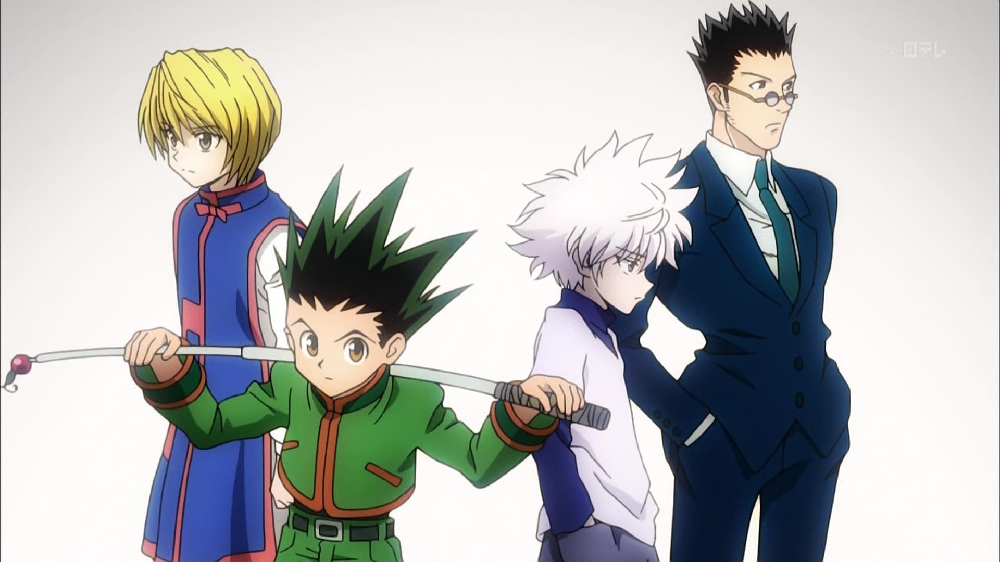

PRUEBA DE PARRAFO TITULAR
PRUEBA DE PARRAFO TITULAR
PERSONAJES


GON FREECSS
new your city
Gon Freecss es un niño de doce años que desea convertirse en un cazador para encontrar a su padre, el legendario cazador Ging Freecss. Al haber pasado mucho tiempo en el bosque mientras era más joven, se le da muy bien tratar con animales. Además, posee extraordinarios sentidos del olfato y vista. En las versiones japonesas sus seiyū son Junko Takeuchi para el primer anime y Megumi Han para el segundo; en el doblaje hispanoamericano su voz es dada por Leonardo Salas, y en el español por Carlos Lladó